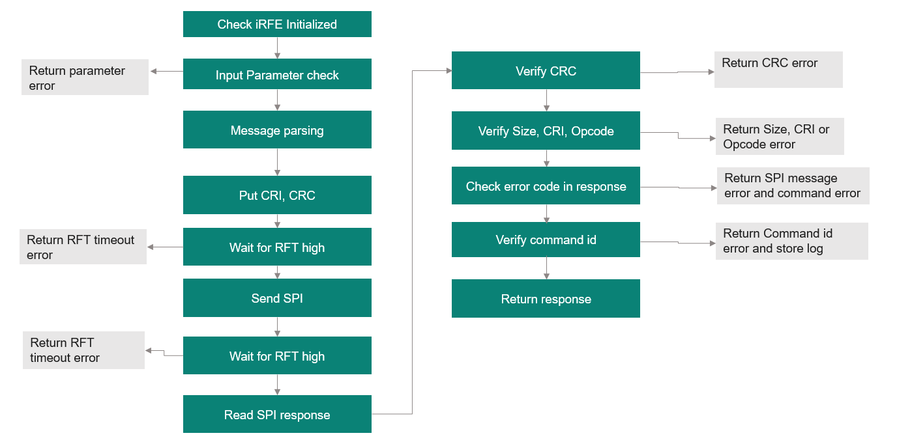

|
iRFE
Documentation for iRFE driver
|

|
|
iRFE
Documentation for iRFE driver
|
|
The iRFE driver provides error handling in the following ways:
The following code snippet provides an example of logging callbacks implementation using iRFE. The below section showcases the methods to write/read to a serialPort buffer.
These methods can then be used in the application using the iRFE struct IfxRfe_logCallbacks_t as shown in the below example code.
CTRX provides firmware commands to allow error handling of the firmware errors. These are firmware commands: Handle_Error() to handle error and Handle_Reset_Reason() to know reset reason status and clear it if requested. Please refer to the User manual section 4.5 Error status for further details of these firmware errors and commands. These firmware commands can be accessed via iRFE through IfxRfe_handleError and IfxRfe_handleResetReason.
The iRFE driver implements error handling for its wrapper function in the following steps as described in the diagram below.

The wrapper function IfxRfe_configureDmux() is taken as an example and the steps are provided in detailed in the below table.
| Step | Code example | Description |
|---|---|---|
| Check if iRFE is not initialied | RETURN_ON_NOT_INITIALIZED(); | Returns error code IFXRFE_E_NOT_INITIALIZED if IRFE is not initialized |
| Serialize the command payload parameters | _configureDmuxSerialize(config_mask, dmux1_alt_signal, dmux1_dir, dmux1_pulse_duration_ext, dmux2_alt_signal, dmux2_dir, dmux2_pulse_duration_ext, dmux3_alt_signal, dmux3_dir, dmux3_pulse_duration_ext, &payload); | Call the serialize function to serialize the command payload parameters |
| Check input parameters (in serialize) | CHECK_PARAM_GREATER(config_mask, 7); | Returns error code IFXRFE_E_INVALID_PARAMETER if any parameter is out of range |
| Check return of serialize function | IFXRFE_RETURN_ON_ERROR(_configureDmuxSerialize(config_mask, dmux1_alt_signal, dmux1_dir, dmux1_pulse_duration_ext, dmux2_alt_signal, dmux2_dir, dmux2_pulse_duration_ext, dmux3_alt_signal, dmux3_dir, dmux3_pulse_duration_ext, &payload)); | IFXRFE_RETURN_ON_ERROR evaluates the return of the function call and returns it, if it is not 0 |
| Call SPI command for execute directly | IfxRfe_spiCmd_executeDirectly(IFXRFE_FW_COMMAND_CONFIGURE_DMUX, payload.payload, payload.len, NULL); | Call SPI command function for execute directly |
| Call and Check for errors on serialize function to build the SPI command | IFXRFE_RETURN_ON_ERROR(_executeDirectly_serialize(command_id, params, params_count, &cmd)); | Initialize command, add payload, CRI and CRC to build SPi command. IFXRFE_RETURN_ON_ERROR evaluates the return of the function call and returns it, if it is not 0 |
| Transmit command and receive response in half duplex mode and check for errors | IFXRFE_RETURN_ON_ERROR(SpiSendReceive(&cmd, &rsp)); | Transmit SPI message and receive back response |
| wait for RFT (in SpiSendReceive) | IFXRFE_RETURN_ON_ERROR(IfxRfe_waitForRftPin(IFXRFE_RFT_TIMEOUT_DEF)); | Wait for the RFT pin to be set. Return IFXRFE_E_TIMEOUT if pin was not set in the requested time |
| SPI command write | IFXRFE_RETURN_ON_ERROR(Wrapper_SpiWrite(command->_actualLen, command->_buffer, false)); | SPI write |
| wait for RFT (in SpiSendReceive) | IFXRFE_RETURN_ON_ERROR(IfxRfe_waitForRftPin(IFXRFE_RFT_TIMEOUT_DEF)); | Wait for the RFT pin to be set. Returns IFXRFE_E_TIMEOUT if pin was not set in the requested time |
| Get header and check header CRC | IFXRFE_CLEAN_RETURN_ON_ERROR(Wrapper_SpiTransfer(1, command->_buffer, response->_buffer, true), ResetKeepSel()); | returns IFXRFE_E_CRC16 if crc does not match |
| Get payload data and check payload CRC | IFXRFE_CLEAN_RETURN_ON_ERROR(Wrapper_SpiTransfer(transferLen, &command->_buffer[1], &response->_buffer[1], false), ResetKeepSel()); | returns IFXRFE_E_INVALID_CRC32 if the payload does not match |
| Check response for errors | IFXRFE_RETURN_ON_ERROR(_checkResponseForErrors(EXECUTE_DIRECTLY_MIN_LENGTH, GET_OPCODE(cmd._buffer[0]), &rsp)); | check size and opcode for invalid responses and return error codes: IFXRFE_E_INVALID_SIZE,IFXRFE_E_CRI_MISMATCH, IFXRFE_E_OPCODE_MISMATCH respectively |
| Check error codes on payload of response (in _checkResponseForErrors) | IFXRFE_CLEAN_RETURN_ON_ERROR(GetPayloadError(rsp, &temp), errorLogFmt("payload error code 0x%02X, value 0x%02X", ret, temp)); | Returns error code for SPI message error and command error: IFXRFE_E_SPI_MSG_ERROR and IFXRFE_E_COMMAND_ERROR respectively |
| Check if command code matches | | If command code does not match, store error log and return error code IFXRFE_E_UNEXPECTED_VALUE |
| Parse execute directly response and return error code | return _executeDirectly_parse(&rsp, result); | parses the response and returns 0 on success |